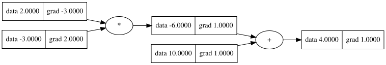
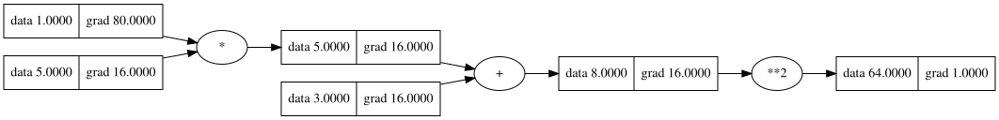
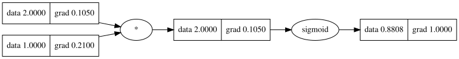
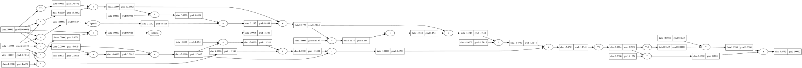

class Value:
""" stores a single scalar value and its gradient """
def __init__(self, data, _children=(), _op=''):
self.data = data
self.grad = 0
# internal variables used for autograd graph construction
self._backward = lambda: None
self._prev = set(_children)
self._op = _op # the op that produced this node, for graphviz / debugging / etcIntroduction to Autograd
Automatic Differentiation, or autograd, is a technique used to compute the derivative of functions defined by computer programs. Unlike symbolic differentiation (which finds a general formula for the derivative) or numerical differentiation (which approximates the derivative), autograd calculates the exact numerical value of the derivative at a specific point by breaking down complex functions into a series of elementary operations and applying the chain rule.
Why is Autograd Important?
In the context of machine learning, autograd is fundamental for training models, especially neural networks. Training typically involves minimizing a loss function, which measures how well the model’s predictions match the actual data. Optimization algorithms like gradient descent require the gradients (derivatives) of the loss function with respect to the model’s parameters. These gradients indicate the direction and magnitude of change needed for each parameter to reduce the loss. Autograd efficiently calculates these gradients, even for models with millions of parameters and complex architectures. It does this by building a computational graph during the forward pass (when the model makes predictions) and then performing a backward pass to compute the gradients. This process is significantly more efficient and accurate than manual differentiation or numerical approximations for complex models.
The Value Class: The Building Block of Autograd
At the core of this autograd system is the Value class. Each Value object represents a single scalar value and is designed to track the operations performed on it, allowing us to compute gradients automatically. ### Key Components of the Value Class Think of a Value object as a node in a computational graph. It holds: - data: The numerical value of the scalar. - grad: The gradient of the final output with respect to this value. This is initialized to 0 and accumulates during the backward pass. - _prev: A set of parent nodes (other Value objects) that were used to compute this value. - _op: The operation that produced this value (e.g., addition, multiplication). The Value class will also store information about how it was created (the operation and its parent Value objects) to reconstruct the computational graph during backpropagation.
Core Logic of Autograd
Downstream Gradient Calculation
The core logic of autograd can be summarized as follows: [ = ] This formula is the essence of the chain rule in calculus, applied to computational graphs. Here’s what each term means: - Local Gradient: The derivative of the current node’s output with respect to its input(s). - Upstream Gradient: The gradient flowing into the current node from the output of the graph. - Downstream Gradient: The gradient flowing out of the current node to its input(s). By multiplying the local gradient with the upstream gradient, we propagate the gradient backward through the computational graph.
Adding Basic Operations (+, *, pow)
The Value class is designed to build a computational graph by tracking the relationships between values through arithmetic operations. This is crucial for backpropagation, where we traverse the graph backward to compute gradients. ### How Basic Operations Work - Addition (__add__): When two Value objects (or a Value and a scalar) are added, a new Value object is created. This new object stores the sum of the data from the operands and keeps track of the operands as its children (_prev). The _op attribute is set to ‘+’. - Multiplication (__mul__): Similar to addition, multiplication of Value objects creates a new Value object representing the product. The operands are stored as children, and _op is set to ’*’. - Exponentiation (__pow__): This method handles raising a Value object to a scalar power. A new Value object stores the result, and the base (self) is kept as a child. The _op indicates the power. These methods not only perform the forward pass calculation but also establish the connections in the computational graph and define the local gradients needed for the backward pass.
Forward Pass
import math
class Value:
""" stores a single scalar value and its gradient """
def __init__(self, data, _children=(), _op=''):
self.data = data
self._prev = set(_children)
self._op = _op # the op that produced this node, for graphviz / debugging / etc
def __add__(self, other):
other = other if isinstance(other, Value) else Value(other)
out = Value(self.data + other.data, (self, other), '+')
return out
def __repr__(self):
return f"Value(data={self.data}, operation={self._op}, children={self._prev})"x = Value(1.0)
y = Value(2.0)
z = x.__add__(y)
print(z)Value(data=3.0, operation=+, children={Value(data=1.0, operation=, children=set()), Value(data=2.0, operation=, children=set())})x = Value(1.0)
y = Value(2.0)
z = x + y
print(z)Value(data=3.0, operation=+, children={Value(data=2.0, operation=, children=set()), Value(data=1.0, operation=, children=set())})import math
class Value:
""" stores a single scalar value and its gradient """
def __init__(self, data, _children=(), _op=''):
self.data = data
self._prev = set(_children)
self._op = _op # the op that produced this node, for graphviz / debugging / etc
def __add__(self, other):
other = other if isinstance(other, Value) else Value(other)
out = Value(self.data + other.data, (self, other), '+')
return out
def __mul__(self, other):
other = other if isinstance(other, Value) else Value(other)
out = Value(self.data * other.data, (self, other), '*')
return out
def __repr__(self):
return f"Value(data={self.data}, operation={self._op}, children={self._prev})"x = Value(2.0)
y = Value(-3.0)
mul = x*y
b = Value(10.0)
L = mul + b
print(x)
print(y)
print(mul)
print(b)
print(L)Value(data=2.0, operation=, children=set())
Value(data=-3.0, operation=, children=set())
Value(data=-6.0, operation=*, children={Value(data=2.0, operation=, children=set()), Value(data=-3.0, operation=, children=set())})
Value(data=10.0, operation=, children=set())
Value(data=4.0, operation=+, children={Value(data=10.0, operation=, children=set()), Value(data=-6.0, operation=*, children={Value(data=2.0, operation=, children=set()), Value(data=-3.0, operation=, children=set())})})import math
class Value:
""" stores a single scalar value and its gradient """
def __init__(self, data, _children=(), _op=''):
self.data = data
self.grad = 0
# internal variables used for autograd graph construction
self._backward = lambda: None
self._prev = set(_children)
self._op = _op # the op that produced this node, for graphviz / debugging / etc
def __add__(self, other):
other = other if isinstance(other, Value) else Value(other)
out = Value(self.data + other.data, (self, other), '+')
def _backward():
self.grad += out.grad
other.grad += out.grad
out._backward = _backward
return out
def __mul__(self, other):
other = other if isinstance(other, Value) else Value(other)
out = Value(self.data * other.data, (self, other), '*')
def _backward():
self.grad += other.data * out.grad
other.grad += self.data * out.grad
out._backward = _backward
return out
def __pow__(self, other):
assert isinstance(other, (int, float)), "only supporting int/float powers for now"
out = Value(self.data**other, (self,), f'**{other}')
def _backward():
self.grad += (other * self.data**(other-1)) * out.grad
out._backward = _backward
return out
def __repr__(self):
return f"Value(data={self.data}, grad={self.grad})"x = Value(2.0)
y = Value(-3.0)
mul = x*y
b = Value(10.0)
L = mul + b
L.grad = 1.0
L._backward()
mul._backward()
print(x)
print(y)
print(mul)
print(b)
print(L)Value(data=2.0, grad=-3.0)
Value(data=-3.0, grad=2.0)
Value(data=-6.0, grad=1.0)
Value(data=10.0, grad=1.0)
Value(data=4.0, grad=1.0)Implementing backward
Backpropagation is the algorithm used to compute gradients of the loss function with respect to the model’s parameters in a neural network. It works by applying the chain rule of calculus in reverse, starting from the output of the computational graph and moving towards the inputs. ### Steps in Backpropagation 1. Initialize the Gradient: The gradient of the output node (the node on which backward() is called) is set to 1, as the gradient of a variable with respect to itself is 1. 2. Topological Sorting: Perform a topological sort of the computational graph starting from the output node. This ensures that when we compute the gradient for a node, the gradients of all nodes that depend on it (its children in the graph) have already been computed. 3. Apply the Chain Rule: Iterate through the nodes in reverse topological order. For each node, call its _backward method. This method accumulates the gradient from the node’s children and distributes it to the node’s parents according to the chain rule.
class Value:
""" stores a single scalar value and its gradient """
def __init__(self, data, _children=(), _op=''):
self.data = data
self.grad = 0
# internal variables used for autograd graph construction
self._backward = lambda: None
self._prev = set(_children)
self._op = _op # the op that produced this node, for graphviz / debugging / etc
def __add__(self, other):
other = other if isinstance(other, Value) else Value(other)
out = Value(self.data + other.data, (self, other), '+')
def _backward():
self.grad += out.grad
other.grad += out.grad
out._backward = _backward
return out
def __mul__(self, other):
other = other if isinstance(other, Value) else Value(other)
out = Value(self.data * other.data, (self, other), '*')
def _backward():
self.grad += other.data * out.grad
other.grad += self.data * out.grad
out._backward = _backward
return out
def __pow__(self, other):
assert isinstance(other, (int, float)), "only supporting int/float powers for now"
out = Value(self.data**other, (self,), f'**{other}')
def _backward():
self.grad += (other * self.data**(other-1)) * out.grad
out._backward = _backward
return out
def backward(self):
# topological order all of the children in the graph
topo = []
visited = set()
def build_topo(v):
if v not in visited:
visited.add(v)
for child in v._prev:
build_topo(child)
topo.append(v)
build_topo(self)
# go one variable at a time and apply the chain rule to get its gradient
self.grad = 1
for v in reversed(topo):
v._backward()
def __repr__(self):
return f"Value(data={self.data}, grad={self.grad})"x = Value(2.0)
y = Value(-3.0)
mul = x*y
b = Value(10.0)
L = mul + b
L.backward()
print(x)
print(y)
print(mul)
print(b)
print(L)Value(data=2.0, grad=-3.0)
Value(data=-3.0, grad=2.0)
Value(data=-6.0, grad=1)
Value(data=10.0, grad=1)
Value(data=4.0, grad=1)Visualization with draw_dot
Understanding the flow of computation and how gradients are calculated is crucial in automatic differentiation. The draw_dot function helps visualize this process by rendering the computational graph. ### How draw_dot Works 1. Trace the Graph: The trace function recursively traverses the _prev attributes of the Value objects, starting from the output node. This identifies all the nodes and edges in the graph. 2. Render the Graph: The draw_dot function uses the graphviz library to generate a visual representation of the graph. Each Value object is represented as a node, and edges represent dependencies between nodes.
from graphviz import Digraph
def trace(root):
nodes, edges = set(), set()
def build(v):
if v not in nodes:
nodes.add(v)
for child in v._prev:
edges.add((child, v))
build(child)
build(root)
return nodes, edges
def draw_dot(root, format='svg', rankdir='LR'):
"""
format: png | svg | ...
rankdir: TB (top to bottom graph) | LR (left to right)
"""
assert rankdir in ['LR', 'TB']
nodes, edges = trace(root)
dot = Digraph(format=format, graph_attr={'rankdir': rankdir}) #, node_attr={'rankdir': 'TB'})
for n in nodes:
dot.node(name=str(id(n)), label = "{ data %.4f | grad %.4f }" % (n.data, n.grad), shape='record')
if n._op:
dot.node(name=str(id(n)) + n._op, label=n._op)
dot.edge(str(id(n)) + n._op, str(id(n)))
for n1, n2 in edges:
dot.edge(str(id(n1)), str(id(n2)) + n2._op)
return dotx = Value(2.0)
y = Value(-3.0)
mul = x*y
b = Value(10.0)
L = mul + b
L.backward()
draw_dot(L)
w = Value(5.0)
x = Value(1.0)
c = w*x + 3
d = c**2
d.backward()
draw_dot(d)
Analogy with Tensors
import torch
# Define tensors which requires_grad=True
x = torch.tensor(2.0, requires_grad=False)
w = torch.tensor(3.0, requires_grad=True)
b = torch.tensor(1.0, requires_grad=True)
# Perform a forward pass and calculate the loss
y = w * x + b
loss = y**2
# This computes d(loss)/dx and d(loss)/db
loss.backward()
# The gradient is accumulated into the .grad attribute
print(f"Gradient of loss with respect to x: {x.grad}")
print(f"Gradient of loss with respect to w: {w.grad}")
print(f"Gradient of loss with respect to b: {b.grad}")Gradient of loss with respect to x: None
Gradient of loss with respect to w: 28.0
Gradient of loss with respect to b: 14.0learning_rate = 0.01
# GD Update Rule
with torch.no_grad():
w.data -= learning_rate * w.grad
b.data -= learning_rate * b.grad
# Updated Gradients
print(f"Updated w: {w.data}")
print(f"Updated b: {b.data}")
# Zero the gradients for the next iteration
w.grad.zero_()
b.grad.zero_()
# Verify gradients are now zero
print(f"Gradient of w after zero_(): {w.grad}")
print(f"Gradient of b after zero_(): {b.grad}")Updated w: 2.7200000286102295
Updated b: 0.8600000143051147
Gradient of w after zero_(): 0.0
Gradient of b after zero_(): 0.0Handling More Complex Operations and Sigmoid
To make our Value class more versatile, we need to implement additional operations beyond basic addition, multiplication, and exponentiation. We can leverage the operations we’ve already defined to build these new functionalities.
Negation (__neg__)
Negation, or taking the negative of a Value (e.g., -a), can be implemented as multiplication by -1.
If c = -a, then c = a * -1.
The derivative \(\frac{dc}{da}\) is simply the derivative of \(a \cdot -1\) with respect to \(a\), which is \(-1\). Using the chain rule, \(\frac{dL}{da} = \frac{dL}{dc} \cdot \frac{dc}{da} = \frac{dL}{dc} \cdot -1\).
In our _backward method for negation (which is handled by the multiplication’s _backward), if out = self * -1, then self.grad += -1 * out.grad.
Subtraction (__sub__, __rsub__)
Subtraction (e.g., a - b) can be defined in terms of addition and negation: a - b = a + (-b). This allows us to reuse the __add__ and __neg__ methods and their respective _backward implementations.
For \(c = a - b = a + (-b)\), the chain rule applies: - \(\frac{dL}{da} = \frac{dL}{dc} \cdot \frac{dc}{da}\). Since \(\frac{dc}{da}\) for \(a + (-b)\) is \(1\) (treating \(-b\) as a constant with respect to \(a\)), \(\frac{dL}{da} = \frac{dL}{dc} \cdot 1\). - \(\frac{dL}{db} = \frac{dL}{dc} \cdot \frac{dc}{db}\). Since \(\frac{dc}{db}\) for \(a + (-b)\) is the derivative of \(a + u\) with respect to \(b\), where \(u = -b\): - By the chain rule, \(\frac{dL}{db} = \frac{dL}{du} \cdot \frac{du}{db}\). - \(\frac{dL}{du} = \frac{dL}{dc} \cdot \frac{dc}{du} = \frac{dL}{dc} \cdot 1\). - \(\frac{du}{db}\) is the derivative of \(-b\) with respect to \(b\), which is \(-1\). - So, \(\frac{dL}{db} = \frac{dL}{dc} \cdot 1 \cdot -1 = -\frac{dL}{dc}\).
Our _backward methods for addition and negation handle this automatically.
We also need __rsub__ for cases like 5 - a, which allows the left operand (an integer or float) to be handled correctly by calling a.__rsub__(5), which we define as other + (-self).
Division (__truediv__, __rtruediv__)
Division (e.g., a / b) can be defined in terms of multiplication and exponentiation: a / b = a * (b**-1). This allows us to reuse the __mul__ and __pow__ methods and their _backward implementations.
For \(c = a / b = a \cdot (b^{-1})\), the chain rule applies: - \(\frac{dL}{da} = \frac{dL}{dc} \cdot \frac{dc}{da}\). Since \(\frac{dc}{da}\) for \(a \cdot (b^{-1})\) is \(b^{-1}\) (treating \(b^{-1}\) as a constant with respect to \(a\)), \(\frac{dL}{da} = \frac{dL}{dc} \cdot (b^{-1})\). - \(\frac{dL}{db} = \frac{dL}{dc} \cdot \frac{dc}{db}\). Since \(\frac{dc}{db}\) for \(a \cdot (b^{-1})\) is the derivative of \(a \cdot u\) with respect to \(b\), where \(u = b^{-1}\): - By the chain rule, \(\frac{dL}{db} = \frac{dL}{du} \cdot \frac{du}{db}\). - \(\frac{dL}{du} = \frac{dL}{dc} \cdot \frac{dc}{du} = \frac{dL}{dc} \cdot a\). - \(\frac{du}{db}\) is the derivative of \(b^{-1}\) with respect to \(b\), which is \(-1 \cdot b^{-2}\). - So, the full derivative is: \[\frac{dL}{db} = \frac{dL}{dc} \cdot a \cdot (-1 \cdot b^{-2}) = -\frac{dL}{dc} \cdot a \cdot b^{-2} = -\frac{dL}{dc} \cdot \frac{a}{b^2}\] Again, our _backward methods for multiplication and power handle this compositionally.
We also need __rtruediv__ for cases like 5 / a, which allows the left operand to be handled correctly by calling a.__rtruediv__(5), which we define as other * self**-1.
Sigmoid Function (sigmoid)
The sigmoid function is a common activation function in neural networks, defined as: \[s(x) = \frac{1}{1 + \exp(-x)}\] The derivative of the sigmoid function with respect to its input \(x\) has a simple form: \[\frac{ds}{dx} = s(x) \cdot (1 - s(x))\] If out = self.sigmoid(), then \(\text{out.data} = \frac{1}{1 + \exp(-\text{self.data})}\).
Using the chain rule, \(\frac{dL}{d(\text{self})} = \frac{dL}{d(\text{out})} \cdot \frac{d(\text{out})}{d(\text{self})}\).
The local derivative \(\frac{d(\text{out})}{d(\text{self})}\) is the derivative of the sigmoid function evaluated at self.data.
So, \(\frac{dL}{d(\text{self})} = \frac{dL}{d(\text{out})} \cdot \text{out.data} \cdot (1 - \text{out.data})\).
Our _backward method for sigmoid directly implements this: self.grad += out.grad * (out.data * (1 - out.data)).
import math
class Value:
""" stores a single scalar value and its gradient """
def __init__(self, data, _children=(), _op=''):
self.data = data
self.grad = 0
# internal variables used for autograd graph construction
self._backward = lambda: None
self._prev = set(_children)
self._op = _op # the op that produced this node, for graphviz / debugging / etc
def __add__(self, other):
other = other if isinstance(other, Value) else Value(other)
out = Value(self.data + other.data, (self, other), '+')
def _backward():
self.grad += out.grad
other.grad += out.grad
out._backward = _backward
return out
def __mul__(self, other):
other = other if isinstance(other, Value) else Value(other)
out = Value(self.data * other.data, (self, other), '*')
def _backward():
self.grad += other.data * out.grad
other.grad += self.data * out.grad
out._backward = _backward
return out
def __pow__(self, other):
assert isinstance(other, (int, float)), "only supporting int/float powers for now"
out = Value(self.data**other, (self,), f'**{other}')
def _backward():
self.grad += (other * self.data**(other-1)) * out.grad
out._backward = _backward
return out
def sigmoid(self):
s = 1 / (1 + math.exp(-self.data))
out = Value(s, (self,), 'sigmoid')
def _backward():
# The local derivative of sigmoid is s * (1 - s)
self.grad += (out.data * (1 - out.data)) * out.grad
out._backward = _backward
return out
def backward(self):
# topological order all of the children in the graph
topo = []
visited = set()
def build_topo(v):
if v not in visited:
visited.add(v)
for child in v._prev:
build_topo(child)
topo.append(v)
build_topo(self)
# go one variable at a time and apply the chain rule to get its gradient
self.grad = 1
for v in reversed(topo):
v._backward()
def __neg__(self): # -self
return self * -1
def __radd__(self, other): # other + self
return self + other
def __sub__(self, other): # self - other
return self + (-other)
def __rsub__(self, other): # other - self
return other + (-self)
def __rmul__(self, other): # other * self
return self * other
def __truediv__(self, other): # self / other
return self * other**-1
def __rtruediv__(self, other): # other / self
return other * self**-1
def __repr__(self):
return f"Value(data={self.data}, grad={self.grad})"a = Value(1.0)
b = 2*a
c = b.sigmoid()
c.backward()
draw_dot(c)
Putting it all together
Tutorial Summary
So far in this tutorial, we have built the foundational elements for automatic differentiation:
- The
Valueclass: A wrapper around a scalar value that also stores its gradient and a reference to the operation that created it, allowing for the construction of a computational graph. - Basic and Complex Operations: We’ve implemented methods (
__add__,__mul__,__pow__,__neg__,__sub__,__truediv__) that overload Python’s operators to work withValueobjects and automatically build the computational graph by tracking dependencies. We also added thesigmoidactivation function. - The
backwardMethod: This method performs backpropagation. It uses a topological sort of the computational graph to ensure gradients are computed in the correct order, applying the chain rule by calling the_backwardmethod of eachValueobject. - The
draw_dotFunction: This utility helps visualize the computational graph generated by ourValueobjects and operations, including the data and gradient values at each node.
Now, let’s put these pieces together with a more complex example. The following code cell will define a computation involving multiple Value objects and a variety of the operations we’ve implemented. We will then perform backpropagation on the final result to compute the gradients throughout the graph and visualize this complex graph with draw_dot to see the flow and the calculated gradients.python
# Complex Example with Backpropagation and Visualization
# Define initial Value objects
x = Value(-4.0)
y = Value(2.0)
# Perform a series of complex operations
q = x + y
r = x * y + y**3
q += q + 1
q += 1 + q + (-x)
r += r * 2 + (y + x).sigmoid()
r += 3 * r + (y - x).sigmoid()
s = q - r
t = s**2
u = t / 2.0
v = u + 10.0 / t
# Print the final value
print(f'Final value (v.data): {v.data:.4f}')
# Perform backpropagation
v.backward()
# Print gradients of initial values
print(f'Gradient of x (x.grad): {x.grad:.4f}')
print(f'Gradient of y (y.grad): {y.grad:.4f}')
# Visualize the computational graph
draw_dot(v)Final value (v.data): 4.6945
Gradient of x (x.grad): 24.7180
Gradient of y (y.grad): 106.6648